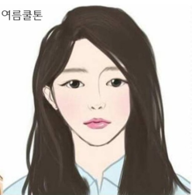

여름 쿨톤의 대표적인 이미지
여름 쿨톤의 이미지를 정확히 나타내는 매우 좋은 자료이다. 여름 쿨톤은 연한 파스텔 톤의 옷을 입어야 얼굴이 돋보인다.
여름 쿨톤의 이미지를 정확히 나타내는 매우 좋은 자료이다. 여름 쿨톤은 연한 파스텔 톤의 옷을 입어야 얼굴이 돋보인다.
대한민국에서 가장 눈부시게 하얗고 우아한 이미지를 가지고 있다. 지적이면서도 여성스러운 여름 쿨톤을 나타내 보이는 스타일링 또한 한몫한다.
시원하고 깨끗하며 소녀적 감성과 지적이고 우아한 인상이 특징 겨울과 달리 파스텔 톤을 잘 소화한다. 부드럽고 신비한 푸른빛 눈동자 화려한 펄보다는 잔잔한 쉬머펄이 어울린다. 핑크색 립과 차갑고 그레이시한 눈화장이 최고 청초하고 여성스러운 이미지
밝은 여름 색상 대표적인 연예인으로는 손예진이 있다.
시원한 여름 색상 대표적인 연예인으로는 김연아가 있다.
부드러운 여름 색상 대표적인 연예인으로는 이영애가 있다.